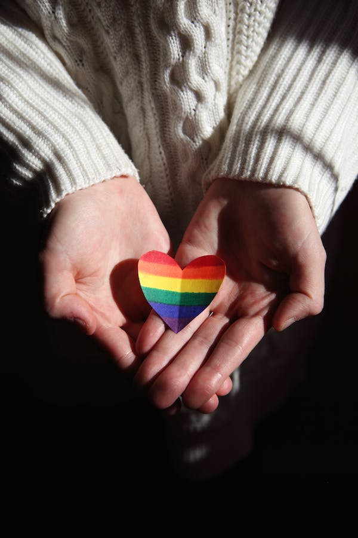

10 Tips for a Healthy and Happy Relationship
In any relationship, maintaining a healthy and happy connection is crucial. Here are some tips to help you nurture your relationship:
- Communicate openly and honestly with your partner.
- Show appreciation and express gratitude for each other.
- Respect each other's boundaries and individuality.
- Make quality time for each other a priority.
- Support each other's goals and dreams.
- Resolve conflicts through constructive dialogue.
- Keep the romance alive by surprising each other and trying new things.
- Show empathy and be there for each other during challenging times.
- Practice forgiveness and let go of grudges.
- Keep the laughter and fun alive in your relationship.
Table: Relationship Goals
| Goal | Description |
|---|---|
| Trust | Building trust is essential for a strong relationship. |
| Communication | Open and honest communication fosters understanding. |
| Respect | Respecting each other's boundaries and opinions. |
Remember, every relationship is unique, and these tips can serve as a foundation for building a healthy and happy partnership. Enjoy the journey of love!